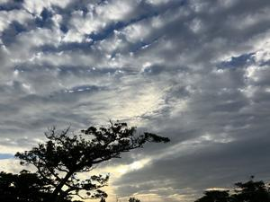

うるがいの話 ある日
最新: 工事が始まる事を伝える【うるがいの話 ある日】とは 一日だけのプログです
『うるがいの話』の最新一日だけのプログで、通信料が少なく経済的だ。カニの画像をクリックすると全ての日付が載る『うるがいの話』サイトを表示します
|
|
【うるがいの話】 うるがい(ｳﾙｶﾞｲ urugai)とは、『もずくがに』の名前でとても大きくなります。 |
|---|---|
|
|
【カミマヤーの話】 猫のことを方言でマヤーといいます。カミマヤー（kamimayaa）とは、神の猫のことです。 |
|
【たながぁの音楽】 たながぁ（ﾀﾅｶﾞｰ tanagaa）とは手長えびのことで、何種類かあり大きいのは車 エビぐらいになります。 |

|
【ぶながぁの話】 ぶながぁ(ﾌﾞﾅｶﾞｰ bunagaa)とは、赤い髪の毛、赤い身体、そして身長は１ｍ２０ｃｍ ぐらい、川の蟹を食べているの目撃された。場所は沖縄県国頭郡大宜味村のと ある村僕の隣近所に住んでいる爺さんから、聞いた話です。 |
|
|
【ギーマの話】 ギーマ(giima)とは、山原の里山に咲くスズランに似た、 花を付けます。実は食べられます、 気が付くと口の周りが紫になっています。 |
2023年11月11日 (土）工事が始まる事を伝える
14:57

『５５才にみえるけど、早期退職して・・・』、そんなことは無いでしょう。
確かに、体重計の体内年齢は５５才だけど。『この辺あたりでは、一番若いで
しょう』、ン、確かに。月曜日から、足場の組立が始まり、しばらくうるさい
ので迷惑かけます。とお隣さんの奥さんに工事の開始を伝える。私のところは
２百万円ほどかかりました、家の中はなにもしてません、外回りだけです。雨
漏りの原因は、ハッキリしていません。ただ、屋上を調べた時、近所の２軒が
防水工事されているので、外壁から水漏れかもということになったの事。防水
工事だけでいいと考えたが、足場で３５万、次に外壁を塗装するとなったらと
また、足場を組まないといけないと今回まとめて工事することを勧められたと
のこと。ん？、家の中は水漏れがあったのに、被害はないのか・・・・・・。
たまたま、損保ジャパンから、『悪質な住宅修理業者にご注意ください、電話
相談口の開設』が載った【重要】契約内容のご案内のハガキが届いていた。
ヨメが、５年以上も前の２階部屋の水漏れの写真を撮っていた。もしかしたら
既に防水工事を済ませた２軒のお隣さんも、水漏れの被害にあったかも。
１４時５３分 ビットコインの総資産 ￥１６、３００（↑２８５）